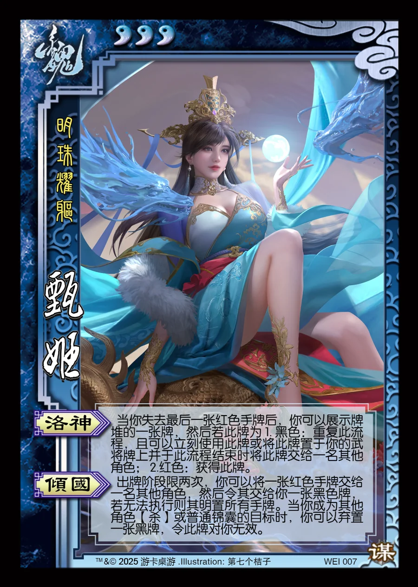

点击卡面查看大图
魏
谋甄姬
♥3明珠耀躯
洛神
当你失去最后一张红色手牌后，你可以展示牌堆的一张牌，然后若此牌为 1. 黑色：重复此流程，且可以立刻使用此牌或将此牌置于你的武将牌上并于此流程结束时将此牌交给一名其他角色； 2.红色：获得此牌。
倾国
出牌阶段限两次，你可以将一张红色手牌交给一名其他角色，然后令其交给你一张黑色牌，若无法执行则其明置所有手牌。当你成为其他角色【杀】或普通锦囊的目标时，你可以弃置一张黑牌，令此牌对你无效。